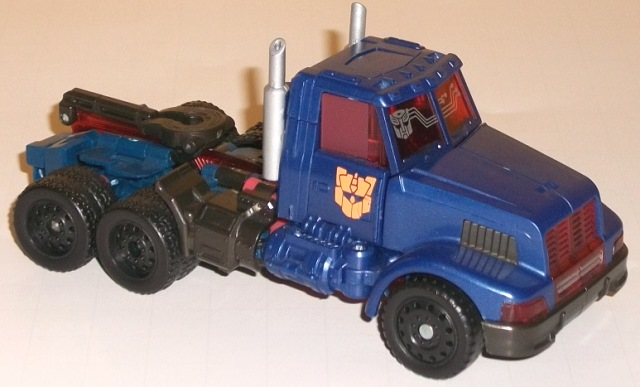

"Ultimate
Giftset" 4-pack (Generations) [Online Store/Toys "R" Us Exclusive]
"Ultimate
Giftset" 4-pack (Generations) [Online Store/Toys "R" Us Exclusive]
Set Price
: $30 U.S.
(NOTE: Because this set is composed of repaints,
this is not a full-blown review. This mainly covers any changes made to
the set and the color scheme, and merely compares it to the original versions
of these molds. For a review on Special Ops Jazz, go
here
.
For a review on the Generations "GDO" Motorbreath toy, go
here
.
For a review on Autobot Alliance deluxe Optimus Prime, go
here
.
For a review on the Generations "GDO" Thundercracker toy, go
here
.)
Autobot
Jazz

Allegiance
: Autobot
Size
: Deluxe
Difficulty of Transformation
: Medium
Color Scheme
: White, black, light
pastel blue, and some transparent blue, light pale orange, silver, red,
moderately dark dull gray, light milky gray, and moderately light bluish
gray
Individual Rating
: 9.5
This repaint of Jazz
is based (somewhat loosely) on his "Generation 2" colors, and it works
well. One can argue this color scheme actually fits Jazz quite a bit better
than his original, given how blatantly it's music-themed. Yes, of course,
there's the obvious "JAZZ" on the rear spoiler (and another one on his
rear bumper), but the stripes down one side of the roof and hood resemble
a music chord, and there's large stylized note symbols along the sides
with a "1" in the center of them. There's also quite a lot of light pastel
blue, particularly in vehicle mode. Combined with the pale orange of the
notes and "chord" stripe, it all goes together with the main white shade
quite well. The transparent dark blue windows, headlights, and visor serve
as a nice contrast color while still fitting in with the overall "theme",
given the pastel blue. The front bumper also has a fair amount of dark
gray, and SURPRISE, the taillights are actually painted this time too (a
rather vibrant red), with the pastel blue along the bottom rims continuing
all the way to the rear tailpipes as well. This version of Jazz certainly
isn't wanting for paint apps, that's for sure. My only issue is, I wish
the orange in particular was a bit darker of a shade, as most of the colors
are a bit "light" in vehicle mode without enough "dark" to pop against
them. That said, given all the paint apps this is a minor issue at best,
and it's considerably less of an issue in robot mode, where black and a
dull bluish shade of gray make themselves known on several of Jazz's robot
parts. Unfortunately there's a bit of that blah light milky gray in there
as well, but it's not in such a large amount to really make me call him
boring, by any means. (That said, all of his particularly interesting paint
apps ARE in his vehicle mode-- beyond the face, his robot parts don't really
get any.)
No mold changes have
been made to this version of Jazz.
Autobot Jazz Tech Specs
:
Strength: 5.0
Intelligence: 9.0
Speed: 7.0
Endurance: 7.0
Rank: 8.0
Courage: 9.0
Fireblast: 5.0
Skill: 10.0
Motorbreath
Allegiance
: Decepticon
Size
: Legion/Legend
Difficulty of Transformation
: Very
Easy
Color Scheme
: Black, chalky light
gray, and some royal purple, metallic royal purple, metallic gold, and
silver
Individual Rating
: 8.4
This release of "Motorbreath"--
aka Motormaster-- is
exactly
the same as the "GDO" solo release
of the toy. Check out the link at the beginning of this review for a review
of the toy-- otherwise, we'll keep moving on, here...
Motorbreath Tech Specs
:
Strength: 9.0
Intelligence: 6.0
Speed: 5.0
Endurance: 10.0
Rank: 7.0
Courage: 9.0
Fireblast: 7.0
Skill: 4.0
Optimus
Prime

Allegiance
: Autobot
Size
: Deluxe
Difficulty of Transformation
: Hard
Color Scheme
: Dark glittery blue,
charcoal black, moderately dark turquoise, and some transparent cherry
red, silver, bright "safety" orange, dark metallic gunmetal gray, light
pale red, light orange, light red, and dark dull reddish brown
Individual Rating
: 8.4
Like Jazz, this Optimus
Prime's deco job is based on a Generation 2 incarnation of him, but not
the first G2 incarnation-- rather, it's based on a "Combat Hero Optimus
Prime" redeco that was to be released near the end of the G2 line, but
never was. Now THAT'S obscure, to the point where I'd almost expect that
from the Botcon peoples instead! Anyways, the major colors for this Optimus
are a couple different shades of dark blue and black. The dark blue-- which
is in other places, but is in its largest concentration on the front half
of the vehicle mode-- is a really eye-catching shade, having a bit of a
swirl to it but also quite a lot of glitter, making it look semi-metallic.
There's also some dark turquoise-- mostly on the robot legs-- that complements
this color quite well, while being slightly lighter and varying up the
colors a bit more. Most of the black plastic on Optimus Prime is actually
more of a charcoal black, not being quite a "pure" black-- I would've personally
preferred all the charcoal black to be a more "pure" black plastic like
on the wheels, but it still looks pretty decent. What kicks this color
scheme up from good to great are the red colors, which, needless to say,
make for a great contrast color against all the dark blue and black. Prime's
transparent plastic is a nice cherry shade of the color, while the bits
of solid red that show up primarily in Prime's robot mode are of a lighter
pale shade (with the couple of light red paint apps being not-so-pale).
It's quite a nice accent color, and keeping most of it pale instead of
bright red gives it a bit of that unrealistic '90s "Generation 2" feel,
but without going off the charts in terms of wackiness/loudness. A few
bits of bright safety orange and silver serve as strictly accent colors,
and contrast against their surrounding colors exceedingly well. The coolest
of these accent paint apps are the the nifty "circuitry" silver patterns
on the front windshield and the orange Generation 2 Autobot symbols on
the side vehicle doors (though a "normal" Autobot symbol is on the front
shield along with the circuitry patterns).
No mold changes have
been made to this specific version of Optimus Prime, but he does have the
same modification made to the shoulder tabs that all versions of this mold
beyond the first release have had-- i.e., no snapping-off tab to worry
about in said shoulders, and no hindering of shoulder articulation by said
tab.
Optimus Prime Tech Specs
:
Strength: 9.0
Intelligence: 10.0
Speed: 8.0
Endurance: 10.0
Rank: 9.0
Courage: 9.0
Fireblast: 8.0
Skill: 10.0
Thundercracker
Allegiance
: Decepticon
Size
: Legion/Legend
Difficulty of Transformation
: Easy
Color Scheme
: Dark glittery navy
blue and some black, silver, light red, and metallic bronze
Individual Rating
: 7.8
Just like with Motorbreath,
this multi-pack's version of Thundercracker is the exact same as the "GDO"
solo release of the toy. Again, click the link at the beginning of this
review if you want to hear my thoughts on this particular paint job.
Thundercracker Tech Specs:
Strength: 7.0
Intelligence: 7.0
Speed: 9.0
Endurance: 7.0
Rank: 5.0
Courage: 5.0
Fireblast: 8.0
Skill: 7.0
The Generations so-called
"Ultimate Giftset" actually lives up to its name fairly well. Zero of the
four molds included are bad or even medicore molds-- though Prime's mold
is a bit overly finicky-- and all of them have color schemes that are at
least on par with, if not superior to, the original colors their respective
molds had. Add onto all this the rarity of mass-market G2 homage paint
jobs for two of them, and a bargain price (at this time deluxes were nearing
$15 U.S. each, and here you have two older/heavier deluxes for $30 WITH
two Legion figures... you're basically getting the Legion figures for free,
and maybe even a bit more than that), and I'd definitely recommend this
set either A. If you don't have two or more of the molds already and/or
B. You love obscure or G2 homages. Definitely a well-put together giftset.
"Ultimate Gift Set" Bio:
Against most opponents, the aerial mastery
of Thundercracker, combined with the raw power of Motorbreath, would be
a deadly threat. But against the genius of the Autobot special operations
commander Autobot Jazz, and the sheer might of Optimus Prime, they don't
stand a chance.
Reviews by Beastbot
Back to Transformers:
Generations Index